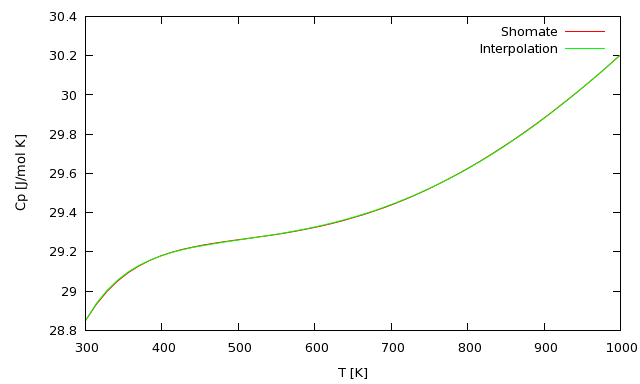
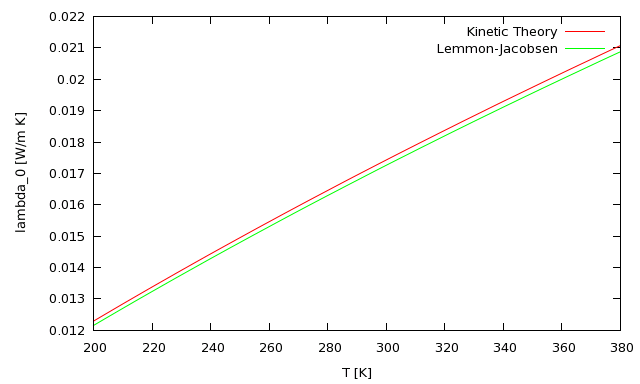

guided-tour
Table of Contents
1 Setting up
Lisp setup loads the systems and sets the `thermo-user' package
(in-package :cl-user) (load-asdf-system :thermo) (load-asdf-system :thermo-user) (in-package :thermo-user)
The package thermo-user is intended for the user to use and explore the facilities provided by the thermophysics&chemistry package. It includes gnuplot and mv-grid-utils for graphical and tabular exploration.
The package :thermo is for the package development.
2 General notes
2.1 Default calculation methods
3 Thermodynamic coefficients
The thermodynamic coefficients, such as S, Cp, H are provided by two types of utilities, based on NIST's webbook: formulas using the Shomate coefficients, or data interpolation tables.
One can use either the defaults or specify explicity which method. This is illustrated below for the calculation of H2 specific heat.
The default method is used if we specify the species symbols
(Cp :H2 300)
Instead, we can explicitly specify the shomate fit coefficients
(Cp (make-shomate-coeffs :H2) 300)
Or we can use the interpolation of the Janaf tables. This call uses GSLL's spline interpolation facilities.
(Cp (make-janaf-coeffs :H2) 300)
The shomate coefficients are stored in the thermo-data directory, in files such as H2.shomate using a lisp format.
Janaf coefficients are stored in the janaf directory, in files such as H2.dat using a txt format.
3.1 Temperature ranges
For most coefficients, we have included the valid temperature range, and if the requested temperature falls outside of it, an error condition is thrown.
(Cp (make-shomate-coeffs :H2) 100);;-> error
4 Plotting
The thermo-user package is build on top mv-grid-utils and mv-gnuplot. This allows for simple plotting using the gcmap macro.
After creating a plot window,
(new-window)
We can create a plot comparing the specific heat calculated by the two methods:
(let ((temp (lseq 300 1000))
(sh (make-shomate-coeffs :H2))
(j (make-janaf-coeffs :H2)))
(set-to ((:xlabel "T [K]")
(:ylabel "Cp [J/mol K]"))
(plot-xys temp
(list (list (gcmap (Cp sh @!temp) temp) :title "Shomate")
(list (gcmap (Cp j @!temp) temp) :title "Interpolation")))))

NIL
This plot demonstrates the use of currying as applied to grids via `gcmap'. It also shows that currently, the arguments of the curried function have to be atoms and not forms that are to be evaluated
To save this plot to a post-script file, we use the following facility from mv-gnuplot
(with-ps-output ("shomate-vs-interpolation.ps" #P"./")
(let ((temp (lseq 300 1000))
(sh (make-shomate-coeffs :H2))
(j (make-janaf-coeffs :H2)))
(plot-xys temp
(list (list (gcmap (Cp sh @!temp) temp) :title "Shomate")
(list (gcmap (Cp j @!temp) temp) :title "Interpolation")))))
This creates a post-script file in lisp's run directory. There are currently no options for other output types (such as png).
Similar plots can be made for S, and H-rel
4.1 Collision parameters
The collision parameter module offers the following functionality:
- Loading the Lennard-Jones collision parameters from lennard-jones-coeffs.lisp
- Calculation of the Omega-11 and Omega-22 collision integrals
The Lennard-Jones parameters can be obtained in two ways:
(make-lj-coeffs :H2);;->#<THERMO::LJ-COEFFS Lennard-Jones coefficients for H2 {BAE0059}>
(lennard-jones-coeffs :H2) ;;->((:M 2.016) (:SIGMA 2.915) (:EPSILON/K 38.0) (:TC 33.3))
The collision integrals are calculated using the equations by Kee et al by the following calls
(omega-11 1.0);;->1.4361933
(omega-22 1.0);;->1.6007648
The infrastructure for the collision integrals allows multiple methods to be used to calculate the coefficients.
The individual methods are defined by classes:
- Kee-omega-11-coeffs
- Kee omega-22-coeffs
- LJ04-omega-22-coeffs from the Lemmon&Jacobsen paper
So, instead of the defaults, we can choose the calculation method by calling slightly different functions:
(omega-22% (make-kee-omega-22-coeffs) 1.0);;->1.6007648
(omega-22% (make-lj04-omega-22-coeffs) 1.0);;->1.5387956
The Kee approximation is preferred to that of Lemmon & Jacobsen as these have a more restricted validity region:
(let ((temp (gseq 0.1 100))
(k (make-kee-omega-22-coeffs))
(lj04 (make-lj04-omega-22-coeffs)))
(set-to ((logscale :xy)
(xlabel "T_reduced")
(ylabel "Omega"))
(plot-xys temp
(list (list (gcmap (omega-22% k @!temp) temp) :title "Kee")
(list (gcmap (omega-22% lj04 @!temp) temp) :title "LJ04")))))

5 Transport coefficients
The package
- viscosity
- thermal conductivity
- diffusion
Viscosity is calculated using the kinetic theory result and the Lennard-Jones parameters as follows:
(mu-0 :H2 350)
The story is more complicated for thermal conductivity, as it depends on the internal degrees of freedom, encapsulated in Cv.
So, in practice, there will be many methods for different gases.
From the references found so far I have assembled the following methods:
- Lemmon & Jacobsen for N2, Ar, O2 and Air
- Assael et al for H2
- Kinetic theory forulation using Cv for He
These are captured in their objects and set as defaults, so that the following works nicely:
(lambda-0 :H2 350);;->0.21095513871295823d0
(lambda-0 :O2 350);;->0.029757758335946592d0
As with all the other coefficients, these provide temperature checks.
One has to be careful with the thermal conductivity calculations, as these formulations may use the gas μ0 and Cv to calculate the thermal conductivity, λ0. Any errors in μ0 and Cv calculations will propagate then into \lamba0.
5.1 Comparison of Argon λ0 using various methods
Argon thermal conductivity can be calculated using the Lemmon-Jacobsen fits, or using the kinetic theory formalism. The following plot compares their predictions (and serves as a cross-check).
(let ((Temp (lseq 200.0 380.))
(coeff (make-lj-coeffs :Ar)))
(set-to ((xlabel "T [K]")
(ylabel "lambda_0 [W/m K]"))
(plot-xys Temp
(list (list (gcmap (lambda-0 coeff @!Temp) Temp) :title "Kinetic Theory")
(list (gcmap (lambda-0 :Ar @!Temp) Temp) :title "Lemmon-Jacobsen")))))
Argon λ0 calculated from kinetic theory and Lemmon-Jacobsen fit
{kind=link}
Not implemente yet are
- hard-sphere models (of academic interest)
- Sutherland model
- transport coefficients for mixtures.